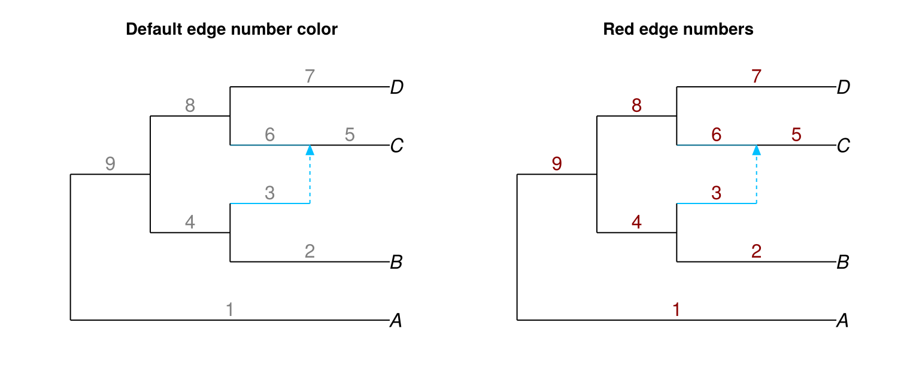
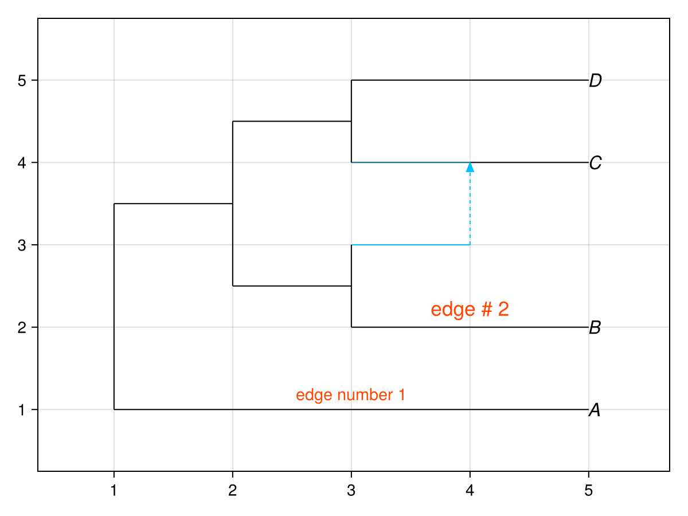
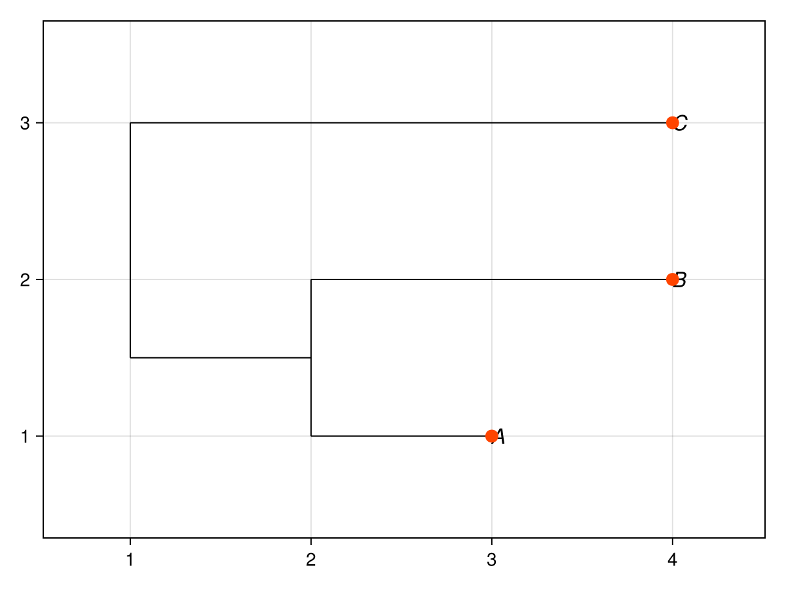
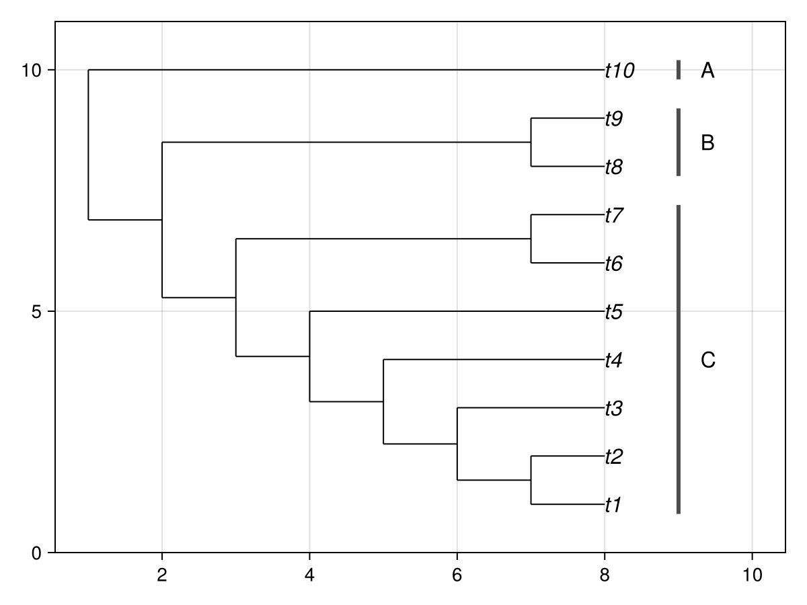

Adding data
In this section, we look over ways of adding extra information or data to a plot.
Adding labels
For demonstration purposes, we walk through the process of adding labels to edges, with notes on how to do the same for nodes in parentheses.
To add labels on edges (or nodes), we need to know their numbers. We can use the showedgenumber = true option for this. (Use shownodenumber = true to see node numbers).
phylogeny = parsephylogeny(NewickFormat(), "(A,((B,#H1),((C)#H1,D)));")
figure = Figure(size = (760, 320))
default_axis = Axis(figure[1, 1], title = "Default edge number color")
red_axis = Axis(figure[1, 2], title = "Red edge numbers")
hidedecorations!(default_axis)
hidedecorations!(red_axis)
hidespines!(default_axis)
hidespines!(red_axis)
plot!(default_axis, phylogeny; showedgenumber = true)
plot!(red_axis, phylogeny; showedgenumber = true, edgenumbercolor = "red4")
figure
Edge numbers are shown in grey by default (to avoid mistaking them for edge lengths), but their color can be adjusted as shown above.
We then need to define a DataFrame with 2 columns of information: the number of the edge (or node), and the label that goes on it, like this:
| number | label |
|---|---|
| 1 | "edge number 1" |
| 2 | "edge # 2" |
After including the DataFrames package, we can define it as so:
julia> using DataFramesjulia> DataFrame(number = [1, 2], label = ["edge number 1", "edge # 2"])2×2 DataFrame Row │ number label │ Int64 String ─────┼─────────────────────── 1 │ 1 edge number 1 2 │ 2 edge # 2
Using this data frame as input to the edgelabel option (nodelabel for nodes) puts the text on the correct edges:
plot(
phylogeny;
edgelabel = DataFrame(
number = [1, 2],
label = ["edge number 1", "edge # 2"],
),
edgelabelcolor = "orangered",
edgecex = [0.9, 1.1],
edgelabeladj = [0.5, -0.3],
)
Adding images to nodes and edges
Use nodeimages and edgeimages to make images part of the live tree plot. The mapping receives each node object, or the phylogeny and each edge object, from the input phylogeny and returns an image source, an ImageAnnotation, or nothing. An image source may be a decoded pixel matrix, a local file path, or an HTTP(S) URL.
This mapping targets tips by name and never depends on node numbers:
circle_paths = Dict(
"A" => "/path/to/red.png",
"B" => "/path/to/blue.png",
)
function tip_image(node)
source = get(circle_paths, node_label(node), nothing)
isnothing(source) && return nothing
return ImageAnnotation(source; position = :right, offset = (6, 0))
end
plot(phylogeny; nodeimages = tip_image)Sparse node dictionaries may use node labels, regular expressions, or node objects as keys. A label selects every node with that exact label, including when several nodes share it. A regular expression selects every node whose label contains a match; use anchors such as r"^cat$" when the complete label must match.
Sparse edge dictionaries may use edge objects or parent_label => child_label selectors, for example Dict(("Root" => "Clade") => image). Each endpoint may be an exact label or a regular expression. An endpoint selector applies to every matching edge, including edges that share the same endpoint labels. Separate dictionary selectors may not overlap on the same node or edge.
Functions remain available when selection requires other node or edge properties. Numeric node and edge selectors are not accepted because those identifiers are assigned by the phylogeny implementation and are not a predictable user-facing key.
The default image has a full height of 0.8 y-axis data units. Tip rows are normally 1 unit apart, so this leaves a 20 percent gutter and scales with zoom. Use scale = 1.25 for a full 1-row image, set height directly for another data-space size, or select size_space = :pixel for a screen-fixed size. The default pixel height is 32 pixels. Width preserves the source aspect ratio in screen space.
position accepts :center, :left, :right, :above, :below, and 4 diagonal values. For exact alignment, use align = (horizontal, vertical); for example, align = (:center, :bottom) aligns the image's bottom edge with the graph anchor. offset = (x, y) adds a pixel displacement after alignment.
Image anchors participate in data limits, but their pixel-rendered extents do not. Increase the axis xautolimitmargin or set xlim when images placed to the left or right need more margin. PhyloMakie caches decoded file and URL sources within each plot, so layout and style updates do not reload them.
The offline examples/src/06b_image_annotations_repl_walkthrough.jl script is a deliberately repetitive REPL walkthrough of exact, repeated, and regular-expression selectors for node and edge images. The more compact examples/src/07_node_edge_images.jl script uses checked-in colored circle files. examples/src/09_phylopic_native_images.jl resolves public PhyloPic thumbnail URLs with PhyloPicMakie and passes those URLs to nodeimages. PhyloPicMakie owns taxon discovery; PhyloMakie owns the image's tree anchor and rendering lifecycle.
For a short REPL-style recipe focused only on placement, see examples/src/08_phylopic_image_placement_recipe.jl. It maps the named tips cat, dog, bear, horse, and mouse directly to URL-backed images and shows the :left, :above, :center, :below, and :right positions side by side.
Adding other annotations using Makie
We can use the return value of plot and the coordinate query functions to get information on the coordinates of different elements of the plot. Using this, we can add any other information we want.
The plot function returns a Makie.FigureAxisPlot with these fields:
figaxisplot.figure
figaxisplot.axis
figaxisplot.plotUse .figure to display the figure, .axis to add more Makie annotations, and .plot with node_positions or edge_positions to query the coordinates used by the live PhyloPlot.
These query functions return independent snapshots. Use node_positions_observable when an annotation must move after a layout update:
reactive_tree = parsephylogeny(NewickFormat(), "((A:1.0,B:2.0):1.0,C:3.0);")
reactive_result = plot(reactive_tree; useedgelength = false)
live_positions = node_positions_observable(reactive_result.plot)
tip_points = map(reactive_result.plot, live_positions) do table
Point2f[
Point2f(row.x, row.y) for row in eachrow(table) if row.isleaf
]
end
tip_overlay = scatter!(
reactive_result.axis,
tip_points;
color = :orangered,
markersize = 14,
)
update!(reactive_result.plot; useedgelength = true)
reactive_result.figure
Passing reactive_result.plot to map ties the callback to that plot's lifecycle. The tip_overlay handle remains the same while its positions change.
The optional examples/src/06_phylopic_composition.jl example passes tree-tip coordinates and scientific names to the discovery-aware PhyloPicMakie.augment_phylopic! function. PhyloPicMakie resolves and renders the silhouettes as an independently owned overlay. The newer examples/src/09_phylopic_native_images.jl example instead gives resolved URLs to nodeimages, making the images native children of the tree plot. The PhyloMakie package itself does not depend on PhyloPicMakie in either case.
Side clade bars example
Here's example code that adds bars to denote clades in the margin:
tree = parsephylogeny(NewickFormat(), "(((((((t1,t2),t3),t4),t5),(t6,t7)),(t8,t9)),t10);")
plot_result = plot(tree; xlim = (1.0, 10.0))
axis = plot_result.axis
lines!(axis, [9.0, 9.0], [0.8, 7.2]; color = :gray30, linewidth = 3)
lines!(axis, [9.0, 9.0], [7.8, 9.2]; color = :gray30, linewidth = 3)
lines!(axis, [9.0, 9.0], [9.8, 10.2]; color = :gray30, linewidth = 3)
text!(axis, 9.3, 4.0; text = "C", align = (:left, :center), fontsize = 16)
text!(axis, 9.3, 8.5; text = "B", align = (:left, :center), fontsize = 16)
text!(axis, 9.3, 10.0; text = "A", align = (:left, :center), fontsize = 16)
plot_result.figure
Let's break this down step by step. First, we read the topology, and plot the graph normally. plot actually returns a value, from which we can get useful information. Below, we store the plot output in plot_result, then check the node x coordinates because they contain the default range of the x axis.
plot_result = plot(tree)
extrema(node_positions(plot_result.plot).x)(1.0, 8.0)Looking at the x coordinates returned by default, we can see that the x range is (1.0, 8.0). To give us extra space to work with, we can set xlim to (1.0, 10.0), forcing the range to be wider on the right, for annotations.
plot(tree; xlim = (1.0, 10.0))Knowing the coordinates, we can now add more information to the plot through Makie. For this, use the Makie functions lines! and text! to add side bars with text on them.
axis = plot_result.axis
lines!(axis, [9.0, 9.0], [0.8, 7.2]; color = :gray30, linewidth = 3)
text!(axis, 9.3, 4.0; text = "C", align = (:left, :center), fontsize = 16)Beyond
To go beyond, we can access data on the nodes and edges to use them as we wish. We can access the coordinates of points and segments and more data like this:
julia> node_table = node_positions(plot_result.plot)19×5 DataFrame Row │ number name isleaf x y │ Int64 String Bool Float64 Float64 ─────┼─────────────────────────────────────────── 1 │ 1 t1 true 8.0 1.0 2 │ 2 t2 true 8.0 2.0 3 │ -8 false 7.0 1.5 4 │ 3 t3 true 8.0 3.0 5 │ -7 false 6.0 2.25 6 │ 4 t4 true 8.0 4.0 7 │ -6 false 5.0 3.125 8 │ 5 t5 true 8.0 5.0 ⋮ │ ⋮ ⋮ ⋮ ⋮ ⋮ 13 │ -4 false 3.0 5.28125 14 │ 8 t8 true 8.0 8.0 15 │ 9 t9 true 8.0 9.0 16 │ -10 false 7.0 8.5 17 │ -3 false 2.0 6.89062 18 │ 10 t10 true 8.0 10.0 19 │ -2 false 1.0 8.44531 4 rows omittedjulia> node_table.x # x coordinate. similarly try node_table.y19-element Vector{Float64}: 8.0 8.0 7.0 8.0 6.0 8.0 5.0 8.0 4.0 8.0 8.0 7.0 3.0 8.0 8.0 7.0 2.0 8.0 1.0julia> hcat(node_table.x, node_table.y)19×2 Matrix{Float64}: 8.0 1.0 8.0 2.0 7.0 1.5 8.0 3.0 6.0 2.25 8.0 4.0 5.0 3.125 8.0 5.0 4.0 4.0625 8.0 6.0 8.0 7.0 7.0 6.5 3.0 5.28125 8.0 8.0 8.0 9.0 7.0 8.5 2.0 6.89062 8.0 10.0 1.0 8.44531julia> edge_positions(plot_result.plot)18×6 DataFrame Row │ number ishybrid ismajor gamma x y │ Int64 Bool Bool Float64? Float64 Float64 ─────┼──────────────────────────────────────────────────────── 1 │ 1 false true 1.0 7.5 1.0 2 │ 2 false true 1.0 7.5 2.0 3 │ 3 false true 1.0 6.5 1.5 4 │ 4 false true 1.0 7.0 3.0 5 │ 5 false true 1.0 5.5 2.25 6 │ 6 false true 1.0 6.5 4.0 7 │ 7 false true 1.0 4.5 3.125 8 │ 8 false true 1.0 6.0 5.0 ⋮ │ ⋮ ⋮ ⋮ ⋮ ⋮ ⋮ 12 │ 12 false true 1.0 5.0 6.5 13 │ 13 false true 1.0 2.5 5.28125 14 │ 14 false true 1.0 7.5 8.0 15 │ 15 false true 1.0 7.5 9.0 16 │ 16 false true 1.0 4.5 8.5 17 │ 17 false true 1.0 1.5 6.89062 18 │ 18 false true 1.0 4.5 10.0 3 rows omittedjulia> node_table19×5 DataFrame Row │ number name isleaf x y │ Int64 String Bool Float64 Float64 ─────┼─────────────────────────────────────────── 1 │ 1 t1 true 8.0 1.0 2 │ 2 t2 true 8.0 2.0 3 │ -8 false 7.0 1.5 4 │ 3 t3 true 8.0 3.0 5 │ -7 false 6.0 2.25 6 │ 4 t4 true 8.0 4.0 7 │ -6 false 5.0 3.125 8 │ 5 t5 true 8.0 5.0 ⋮ │ ⋮ ⋮ ⋮ ⋮ ⋮ 13 │ -4 false 3.0 5.28125 14 │ 8 t8 true 8.0 8.0 15 │ 9 t9 true 8.0 9.0 16 │ -10 false 7.0 8.5 17 │ -3 false 2.0 6.89062 18 │ 10 t10 true 8.0 10.0 19 │ -2 false 1.0 8.44531 4 rows omitted